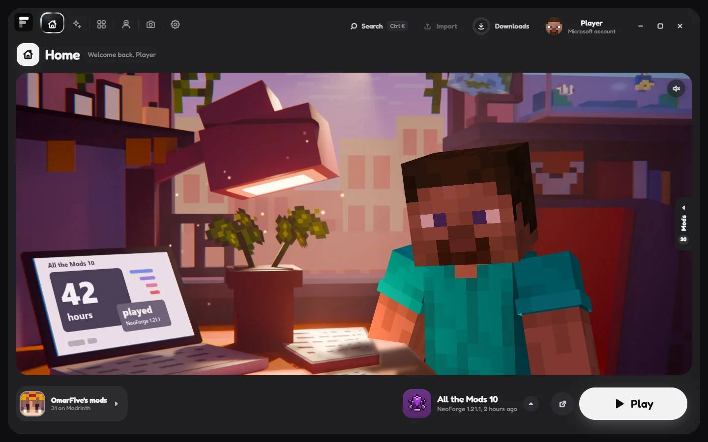
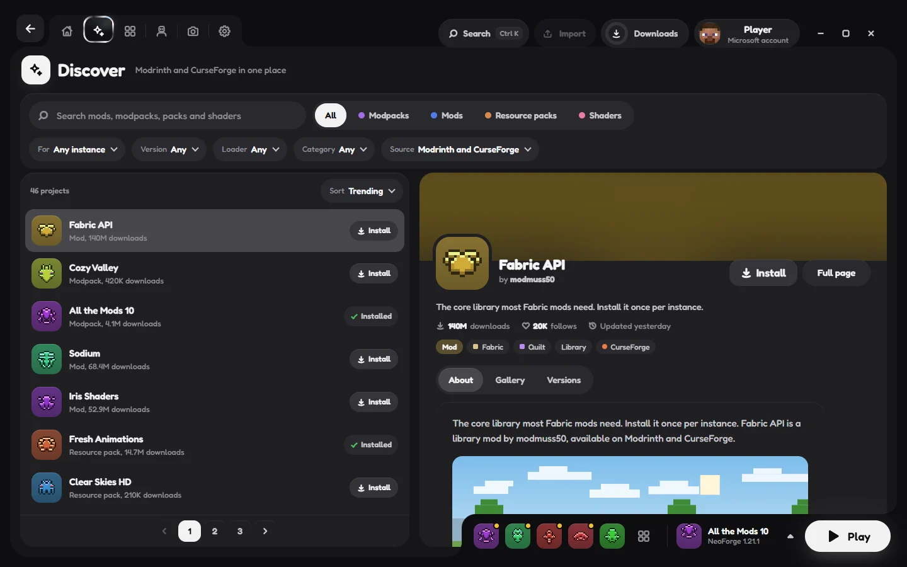
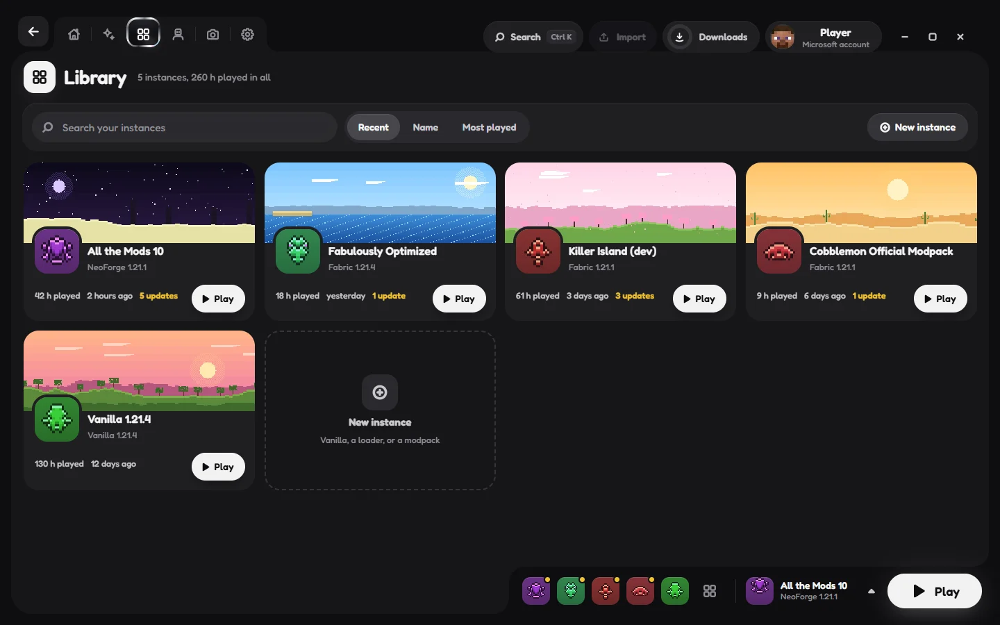
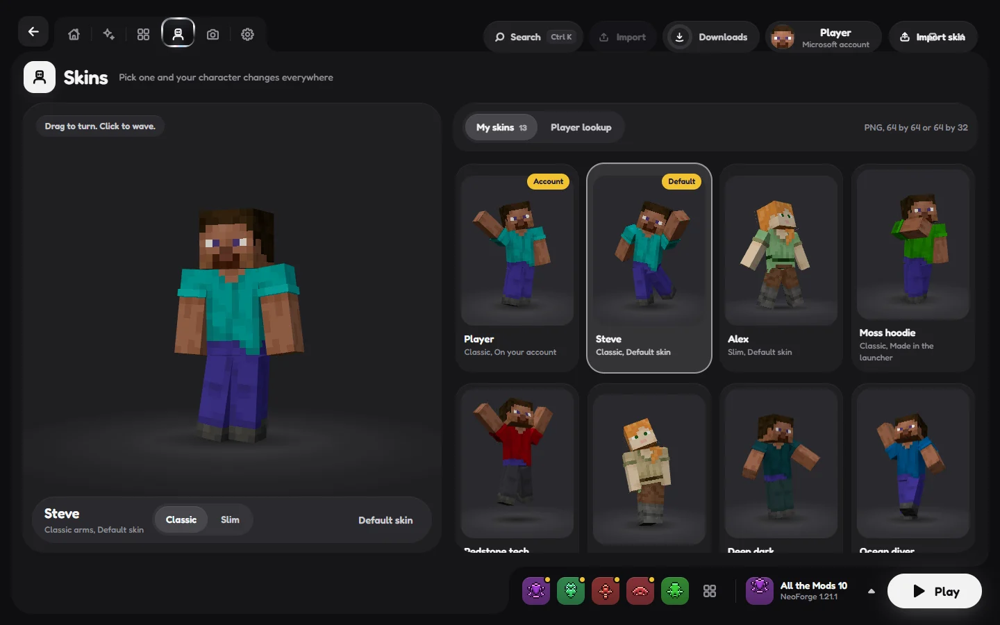
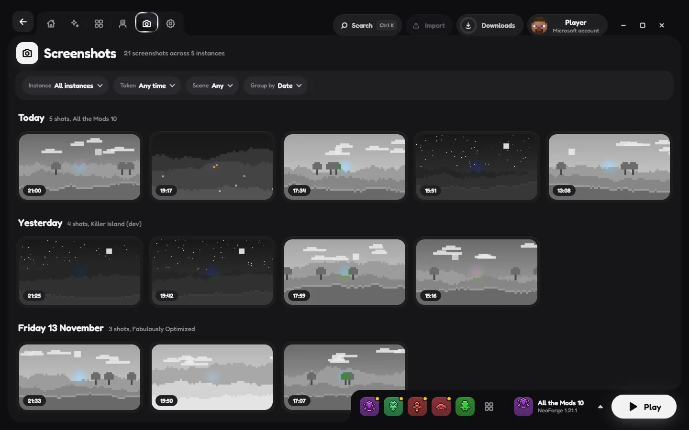
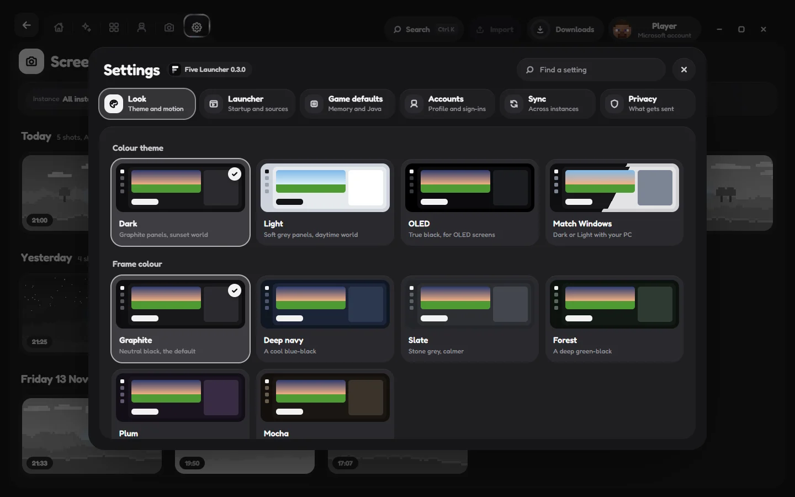

Liquid smooth.Play Minecraft the best way.
Mods, modpacks, resource packs and shaders in one click. Fabric, Forge, NeoForge and Quilt built in.
Updates itself to the newest version on first start.
Free
No tracking
4 loaders
Screens
Every screen, the way it looks on your PC






Features
Everything in one clean window
Speed score
Measured0/ 100
Five Launcher's overall score for opening, memory use and CPU at rest, against other launchers.
Higher is better. Measured Nov 19 2026 on one PC (16 threads, RTX 4080 SUPER), median of 5 runs, launcher only. In each test the better launcher scores 100. Hover the graph for the real numbers.
Updates
What changed in each version
Questions
The short answers
Five Launcher isn't code-signed yet, so SmartScreen warns about new apps. Click More info, then Run anyway. The setup is the same file published on our GitHub releases.
Yes. No ads, no account on our side, no tracking. You sign in with your own Minecraft account.
In your own user folders. Your instances and worlds stay when you uninstall unless you remove them.
Yes: Fabric, Forge, NeoForge and Quilt, with mods, modpacks, resource packs and shaders.
When a new version is out, an Update button appears in the top bar. One click and it restarts on the new version.
Creator
Who makes Five Launcher
OmarFive
I make Minecraft videos on YouTube and build the tools behind them. Five Launcher started as the launcher I wanted for myself: fast, clean and out of the way, so you can just play.
OmarFive's mods
My mods and modpacks are one click away on Home inside the launcher.
The character animations in the app are my own. The launcher talks to Microsoft for sign-in and to Modrinth for content. No tracking.